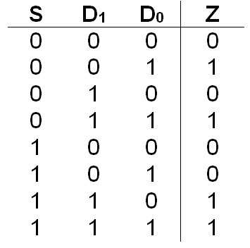
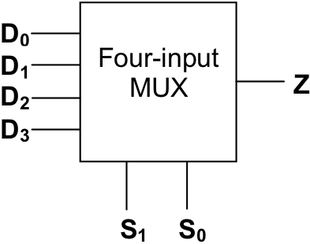
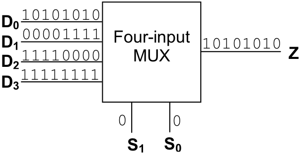
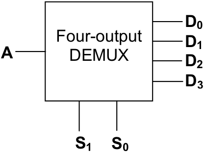
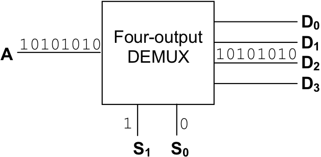
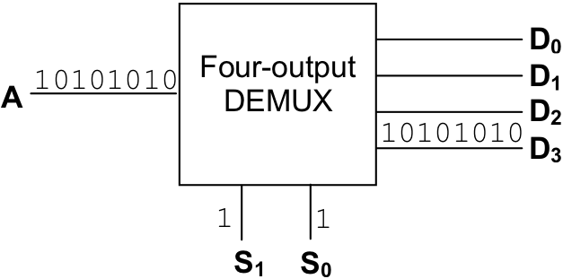

Multiplexers are circuits that are used to transfer the contents of an input data line to an output line based on the value of one or more input selector lines. While that definition sounds a bit intimidating, multiplexers really aren’t that complex. Essentially, a multiplexer is a kind of switch. It has two types of inputs, data lines and selector lines, and a single output line. The purpose of a multiplexer is to transfer the contents of one of the input lines to the circuit’s sole output line. The values placed on the selector lines determine which data line will have its contents echoed to the output line. Thus, the selector lines allow the multiplexer circuit to switch its “attention” between the various input data lines when determining the value to be output.
Generally, a multiplexer, or MUX [2] , will have 2n data lines for n selector lines. The data lines are numbered 0 to 2n – 1, and the selector lines are numbered 0 to n – 1. The bit pattern placed on the selector lines, when interpreted as an unsigned binary number, determines the active data line. Multiplexers are often referred to in terms of their number of data lines. So, an eight-input MUX will have eight data lines and three selector lines, while a two-input MUX will have two data lines and a single selector line. Remember that regardless of the number of input data and selector lines, every MUX has only one output line.
presents an implementation of a two-input multiplexer. It has two data lines, one selector line, and a single output. When the selector line, S, is set to “0”, the current value of D0 (either a “1” or a “0”) becomes the output of the circuit, regardless of the value of line D1 . The circuit is, in a sense, “listening” to D0 and “ignoring” D1 . When S is “1”, the opposite situation exists. The output of the multiplexer becomes the current value of D1 , and D0 is ignored.
An implementation of a two-input multiplexer.
The behavior of the two-input multiplexer is summarized in the following truth table.
illustrates a somewhat more complex multiplexer, a four-input MUX. The four-input MUX has two selector lines, four data lines, and a single output line. Placing a “0” on both S1 and S0 , corresponding to 00two , or zero, causes the value of D0 to be sent to the output line. Setting S1 to “0” and S0 to “1”, corresponding to 01two , or one, causes D1 to be the active line. Likewise, S1 = “1” and S0 = “0”, meaning 10two , or two, focuses attention on D2 . Finally, S1 = “1” and S0 = “1”, meaning 11two , or three, causes the D3 input to be transferred to the output line.
An implementation of a four-input multiplexer
An inspection of the circuit diagram for the four-input multiplexer of reveals that it contains four three-input and gates, two single-input not gates, and one four-input or gate. Each and has one of the data lines running into it, plus two selector signals. Some of the selector signals have been routed directly from the selector input lines, while others have been negated before being sent on to the and gates. The outputs of all four of the and gates are routed into the four-input or . The output of this or becomes the output of the multiplexer circuit. If any one of the and gates generate a “1”, the circuit will output a “1”. If all of the and gates produce “0”, the circuit will output a “0”.
In order to better understand the behavior of this multiplexer, let’s examine the conditions under which each of the and gates could fire. A three-input and gate can produce a “1” only if all of its inputs are “1”. Thus, the two selector signals and the data value reaching the and gate must be “1” for that gate to generate a “1”.
The selector signals reaching the gate that is connected to D0 are not S1 and not S0 . This gate can produce a “1” only when S1 = “0”, S0 = “0” and D0 = “1”. Under any other circumstances, such as a D0 of “0”, or either S1 or S0 being set to “1”, this and gate produces a “0”. Hence, this part of the circuit faithfully “echoes” the value of D0 when the S1 ,S0 bit pattern is “00”. Just as importantly, this and gate stays low when the selector bit pattern is not “00”, regardless of the value of D0 .
The other and gates act in a similar manner. The gate for D1 is attached to not S1 and S0 , so it only generates a “1” when S1 = “0”, S0 = “1”, and D1 = “1”. Other selector bit patterns keep it low. The and gate that receives the D2 signal is connected to S1 and not S0 . This gate produces a “1” only when S1 = “1”, S0 = “0”, and D2 = “1”; it generates a “0” at all other times. Finally, the and gate for D3 is attached directly to S1 and S0 . Thus, it generates a “1” when S1 = “1”, S0 = “1”, and D3 = “1”.
Because of the way the selector signals are routed to the various and gates, it is impossible for more than one of them to produce a “1” at the same time. For this reason the results of the and gates can be safely combined via an or without worrying that signals from multiple data lines will be accidentally combined.
The four-input multiplexer can be represented by a “black box” such as the following.
 (a) MUX transmitting input Data Channel Zero on output Channel Z
(b) MUX transmitting input Data Channel One on output Channel Z
An illustration of the behavior of multiplexers
illustrates the behavior of the four-input MUX over time. The input lines and output lines are labeled with the data streams flowing down them. During the period of time illustrated in (a), selector lines S1 and S0 are both held at zero, making Data Channel Zero the “active” data channel. In part (b), S1 is held at zero and S0 at one, activating Data Channel One.
While the selector lines are held steady, the current state of each of the data lines varies over time. [3] For example, in both parts of , line D0 first contains a “0”, then its value changes to “1”, then back to “0”, then to “1”, then “0”, then “1”, etc. Line D1 begins by broadcasting four consecutive “1’s” followed by four consecutive “0’s”.Notice that when Data Channel Zero is active (S1 = “0”, S0 = “0”), its bit pattern, (“0”, “1”, “0”, “1”, “0”, “1”, “0”, “1”) is copied to the output channel. Likewise, when Data Channel One is active (S1 = “0”, S0 = “1”), its bit pattern (“1”, “1”, “1”, “1”, “0”, “0”, “0”, “0”) is copied to the output channel.
An implementation of a four-output demultiplexer
The next circuit we will look at is the demultiplexer. The demultiplexer is the exact opposite of the multiplexer. Each demultiplexer has a single data input line, n selector input lines, and 2n output data lines. As was the case with multiplexers, the n selector lines are numbered from 0 to n – 1, and the 2n output data lines from 0 to 2n – 1. Demultiplexers generate a copy of their input data value on the output data line specified by their selector lines.
Demultiplexers are often referred to using their number of output lines. illustrates an implementation of a four-output demultiplexer. The value of the input data line labeled “A” is transferred to one of the output data lines, D0 through D3 , based on an interpretation of the bit pattern in S1 ,S0 as two-bit unsigned binary number. For example, if S1 = “1” and S0 = “0”, corresponding to 10two , or two, then the current state of the input line would be transferred to D2 .
The design of this circuit is quite similar to the one used for the decoder circuit of . The only difference is that a copy of the input data value is routed to each of the and gates so that instead of simply setting the selected output line high, its value will instead be determined by the input data value.
Here is a “black box” representation of the four-output demultiplexer, or DEMUX.
illustrates the behavior of the four-input DEMUX over time. The input lines and output lines are labeled with the data streams flowing down them. During the period of time illustrated in (a), selector line S1 is held at one and S0 is held at zero, making output Data Channel Two the “active” data channel. In part (b), S1 and S0 are both one, activating output Data Channel Three. These examples illustrate how a demultiplexer can “broadcast” an input data stream down one of many different output channels. Changing S1 ,S0 switches the “broadcast” to a different output channel.
(a) DEMUX transmitting input Channel A on output Data Channel Two
(b) DEMUX transmitting input Channel A on output Data Channel Three
An illustration of the behavior of demultiplexers
Exercises for
Derive the Boolean expression for the output of the four-input multiplexer shown in .
Give a Boolean expression that represents the output of an eight-input multiplexer.
Design a circuit to implement the functionality of an eight-input multiplexer.
Design a circuit to implement the functionality of an eight-output demultiplexer.
Footnotes
[2] Rhymes with “sucks”.
[3] Signals that vary over time require the presence of a “system clock”. As we will see later in this chapter, computers incorporate clocks to coordinate the actions of all of their various circuits and the data that flows through them.